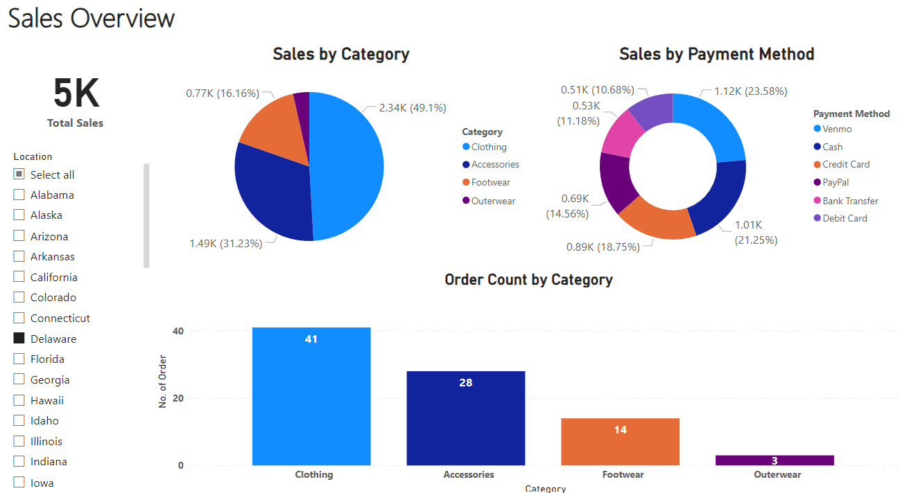

Portfolio
|  |
PowerBI |
 |
Student Enrollment SystemAnalyze system workflow, design a clear workflow diagram. Create a Python-based terminal student portal for login, managing student information, document verification, fee processing. Use SQLite for data storage, add status tracking to monitor student progress during registration. Python | SQLite | Draw.io |
 |
Receipt/Sales Logic and MethodologyIdentify entity associations and attributes. Create an ERD to visualize connections. Use SQL to set up tables and views. Employ queries for data tasks like insertion, updating, deletion, and table joins to extract receipt information. Understand relationships, depict them in an ERD, define the structure through SQL, and manage data for receipts. MariaDB | DBeaver | MySQL | Draw.io |
 |
Predicts SurvivabilityPreprocessing data, build a decision tree classifier, and optimize the model using cross-validation and grid search. To produce a model that predicts survivability for the Titanic passengers. DecisionTree | Pandas | Numpy | Scikit-learn | Seaborn | Matplotlib |